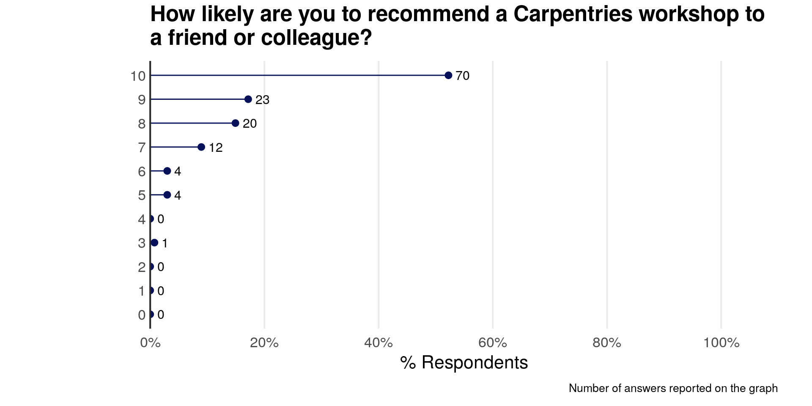
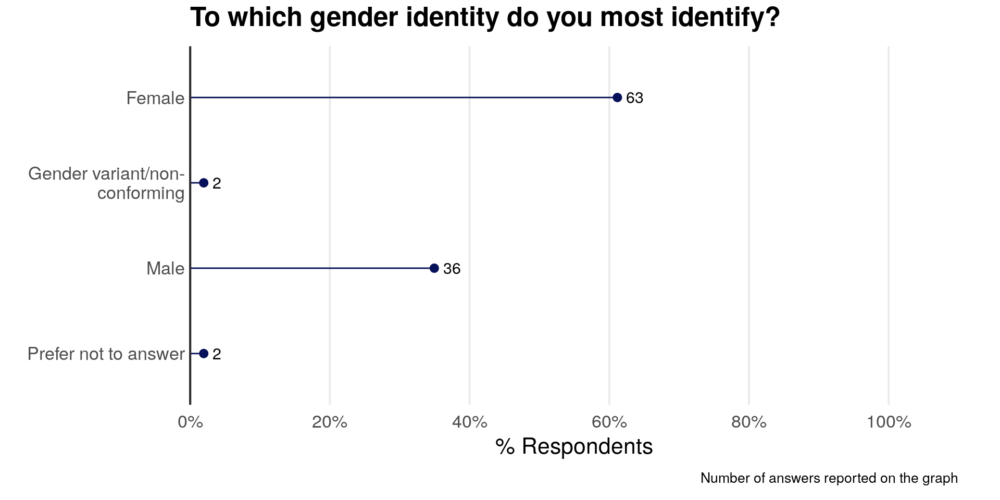

Analysis of The Carpentries Long-term Surveys
François Michonneau1
Kari L. Jordan2
January xxth, 2020
What is your current career stage?
Other answers
| occupation |
|---|
| IT Manager |
| Librarian |
| Research Software Engineer |
| Ph, D |
| Library digital developer |
| Librarian |
| Librarian |
| Technical staff |
| Research Data Advisor and Workshop Instructor |
| Senior academic librarian |
| Government research staff |
| University librarian |
| Temporary unemployed |
| Post-Bacc, pre-grad student |
| State Government Research Staff |
| Forskerlinjestudent |
What is your field of research, work, or study?

Is this your first time completing this survey?

How many Carpentries (Software, Data, Library) workshops have you completed as a learner?

How long ago did you last complete a Carpentries workshop?

Which Carpentries workshop did you last attend?
Please tell us the location of the workshop you last attended.
What do you want to do here? Should we manually recode the values to something we can interpret?
What is the goal of this question?
What content was covered at the last Carpentries workshop you attended? Select all that apply.

Which of the following behaviors have you adopted as a result of attending a Carpentries workshop? Check all that apply.

Before attending a Carpentries workshop, how often did you use programming languages (R, Python, etc.), databases (Access, SQL, etc.), version control software and/or the shell?

Since attending a Carpentries workshop, how often do you currently use programming languages (R, Python, etc.), databases (Access, SQL, etc.), version control software and/or the shell?

How would you rate your change in confidence in the tools that were covered during your Carpentries workshop(s) compared to before the workshop?

If you are using the tools you learned in a Carpentries workshop, how are they helping you? Check all that apply.
Has attending a Carpentries workshop contributed to your writing of a research article, thesis, dissertation, or grant proposal?

If you answered yes to question 16, please tell us how attending a Carpentries workshop contributed to your research writing.
| workshop_contributed_academics_open |
|---|
| Using Rstudio in data analyses included in research articles |
| Helped me learn to manage my work and comment code for reference in the research writeup process |
| I use R to analyze several datasets and create figures. I’m also learning how to use R Markdown to present my data |
| I work to place all the work documentation and data content within the ISO 5127 (operations on data) standards |
| I will write an internship report that draws on the version control practice that I learned in part from the Carprentries |
| I have written articles for publication and also assisted students in data analysis which have been submitted for publication |
| Comfort with shell as enabled all-around better workflow from directory management to updating packages |
| It has helped me analyze data for publication |
| Reproducibility/Credibility of my work |
| Methodology, and continuity through version control and being able to reduce errors by automating repetitive tasks helps a lot |
| The workshops helped me really streamline my research. I used R before, but the workshops helped me organize everything. Also, I am now a Carpentries instructor, which has been pivotal in getting me my current faculty position (teaching data science) |
| The Git course inspired me to use Git as a tool for version control of my data analysis codes. I am now writing an article with my collaborators on the results of the analysis |
| My data is more organized and more efficient to access and utilize |
| Along with being confident in new projects, and using the Carpentries reputation for proposal writing, I have generated a complete semester course and now have additional graduate students doing computational biology |
| I am more confident writing about the analyses that need to be performed and addressing the challenges of research data management and research software engineering |
| Data managing |
| There is definitively more confidence in being able to achieve what we propose in our grant applications |
| By learning the various technologies, my data analysis pipelines have become more streamlined and less prone to error, with the previous error being largely attributed to human error dealing with large data sets in Excel. By removing such error with tools like Python and R using dataframes, I’m more confident with data transformations and reporting. Additionally, the time saved from using Python to run analyses have allowed more time to write |
| Better organized; good network to write proposal together and more confidence |
| using git to track writing versions |
| My research is entirely data science and ml related |
| Helped with analysing data, preparing manuscript and thesis |
| I can manage my data in R, manipulate and use help file I find online more successfully |
| I think it will contribute when I get round to writing the article. Right now it is more relevant to the analyses upon which the article will be based |
| Generated prelim data for proposal and created workflow for identification of super-enhancers from ChIP-seq fastqs |
| Sharing data and codes for reproducible research |
| N/A |
| Workshop introduced me to a tool (R) without which I would not have been able to do the analyses required for my latest published article. The workshop was, however, just an intro and can hardly get all the credit |
What topics could we offer that would motivate you to take another Carpentries workshop? Please describe below.
Is there anything you’d want to do here?
The statements below reflect ways in which attending a Carpentries workshop may have impacted you. Please indicate your level of agreement with these statements.
Please tell us the most important way you were impacted as a result of attending a Carpentries workshop.
| impact_open |
|---|
| Increased awareness of tools, possibilites and limitations |
| I am now using the carpentries format to teach courses |
| Introduced me to the concepts |
| Developed computing skills and learned the basics relating to computing softwares that clarified their functioning. feel more confident and comfortable using the various computing tools which seemed a daunting task to me previously. Now I am more motivated to upgrade my level and seek to master other computing program |
| As a new grad student when I took this workshop, I’ve learned many new and good practices for coding, such as version control (though I’m still working on this skill) and utilizing the Unix shell to run R scripts |
| Learned a lot about the scope of things that can be done with the tools, especially R |
| Using the Unix Shell and git |
| Learned cool stuff about R |
| The biggest impact are the abilities to reproducibility organize and analyze my large datasets |
| All benefits related to tidyverse |
| I have returned many times to the data carpentry schedule & setup web page every time I work with a new computer. I am thankful this web page exists. The most comfortable skill I took away was Unix command line |
| There is a lot of dat and different wyas to manage it |
| I have been able to teach, train others and inspire them to use the tools |
| It convinced me to pursue teaching a Carpentries course |
| Awareness of an amazing community of teachers and colleagues eager to produce knowledge with me |
| Gaining confidence from seeing other people at a begginer level |
| The workshop has helped me to use cloud computing (Cyverse) for analysis of large datasets |
| The networking that took place between other participants and the instructors |
| It helped me to collaborate, and talk to other programmers at different levels, gauge my knowledge and skills at programming. Solidify some good practices, and identify bad ones |
| It exposed me to programs and data resources that I was previously unfamiliar with. This makes me feel more confident that I could more easily relearn these tools, if a future project/job requires it |
| Code management. Git, GitHub etc |
| It motivated me to continue to work towards becoming proficient in a coding language |
| I like coding more than before, that motivates me to learn more and out it and use it more often |
| I am faculty now, at the University of Florida, to teach data science (in environmental sciences), and I think my experience with The Carpentries played a large part in me getting this job |
| Well, it’s not only the workshop that are important, but also the possibility to take lessons on our own, as they are a very good starting point to lean. I would actually that it would be easier to find either lessons or lessons in current development. (I suddenly discoveref some lessons that would be interesting to take on my own and contribute to, but I do not think it is easy to have an overview of all work done) . Easier visibility will increase both learning ability and collaboration I think |
| Introduced me to what tools are out there and motivated me to go out and explore what’s there (find ways to learn online or what to look up online to try and do the analysis I need to do) |
| It prompted me to learn Python, which became my language of choice |
| Can share the code or discuss on the code |
| The workshop showed me that its feasible to learn and become quite proficient at coding and data management |
| Be aware of the tools that can help make research reproductible |
| I’m not sure. I learned a lot of commands that I now use every day |
| I needed to learn to manipulate numerous files programmatically using Bash for my current project, and I learned to do that in the workshop. I had also not learned any Python or actually any language but R before the workshop, so it was helpful to me to learn some of that |
| Get inspired to learn more |
| I am now developing curricula to offer a PhD in bioinformatics |
| I’m confident to try helping myself when I run into a coding problem or learning a new programming language |
| I learned that my current skill set is highly valued and that I should probably do more outreach |
| I understand a little more of the language when attending bioinformatics/programming meetings/sessions |
| It teached me much about how computers can help |
| Increased data analysis efficiency |
| learning git |
| It gave me the confidence/motivation to continue to seek out ways to learn |
| I now feel comfortable using the tools and feel like I could explain them to others |
| It was the first time I used git. While I do not currently use git it made me motivated to learn more in the future. Most other topics were at too much of a beginning level to be useful to me |
| Know how to use git |
| Helped me get through the mental barrier of thinking that I could not learn |
| It was a structured way to learn things I already knew so it helped me to fill some gaps |
| I started learning Python and considering to switch from SAS to python. Need more understanding and practice on Github version control before accepting in daily routine |
| Realizing there are better and easier ways to collaborate |
| Exposure to R and Python was great which improved my understanding |
| it was the first step in work that I might do in the future, but has not been directly relevant to me yet |
| The most important thing I got out of the workshop was a better understanding of Git |
| I have the tools I need for future analysis of my data |
| I feel more confident with R! |
| I would have learned on my own most of the things that I learned in the carpentry workshop. However, all of that would have taken me a longer time to do. Therefore, the workshop saved me valuable time. I wish that I had taken it earlier in graduate school. The workshop also introduced me to other data scientists on campus. I am now aware of this network of people who I can reach out to if I have major computing questions |
| confidence builder and learned what was out there |
| I’d never used any programming language before, at all, and the workshop gave me the confidence to at least try out R. I’m by no means proficient, but it got me over the hump of at least trying it! |
| better able to understand and utilized published scripts/code |
| Using the skills I learnt as soon as possible and strengthening them |
| My time spent finding the correct files and data, cleaning the data, and analyzing my data has all been cut by hours for every experiment I do. My analysis is also actually reproducible now! |
| You lowered the hurdle when I work on the NGS data |
| I had never used R before the course, so this was a very good introduction |
| Learned about programming skills |
| I was introduced to a new programming language that I use now in my research |
| Useing R for data analysis and writting reports |
| learned about data management |
| It took some of the edge off learning a new and intimidating skill set and gave me the confidence to practice, make mistakes, and learn |
| My confidence in using various data carpentry tools as well as exposure to a number was completely unfamiliar with |
| It created a lot of questions (opened my curiosity) about the limits of the tools, and based on those questions I have discovered thier benefits in the majority of my engineering classes |
| I use git and am able to version track now instead of manually changing the name of files to track versions |
| The importance of having everything be reproducable. Also, the importance of documenting everything |
| I’m still a newbie, using these tools. I need further training before I can start using them regularly |
| It motivated me to learn more by showing how fast (and fun) useful things could be done in R. I might have given up on R without it, as the learning curve was quite steep |
Please indicate your involvement in the Carpentries community since attending a Carpentries workshop. Check all that apply.

Which of the following learning activities (for data management and analysis) have you participated in since attending a Carpentries workshop? Check all that apply.

Have you recommended a Carpentries workshop to a friend or colleague?

How likely are you to recommend a Carpentries workshop to a friend or colleague?

Optional: Please tell us two outcomes you accomplished as a result of attending a Carpentries workshop.
| outcomes_open |
|---|
| I’ve started a path to learning python, but at a slower pace |
| I grew more confident in the R coding skills and went on to make a shiny app for my lab’s shared animal husbandry data |
| - Improve code efficiency for data handling - Introduction to Git for code sharing |
| I am slightly better working in a bash shell and I sort of know how to navigate github |
| Started a study group that is still on-going after I left, so helped built a Carpentries community there. Mentored participants to become instructors |
| 1. Code repeatability and commented 2. Git control |
| I now manage my code. I’m more confident in experimenting without breaking my code |
| Faster learning, easier to combine several tools. Learned a lot about different technologies and how people do their work in different fields (ie also in study groups). This 8pen the mind and gives new idea of how my work will and can be done better |
| use OpenRefine to sort out tables, tried version control with Git |
| learn the visualization about R is useful |
| Converted a folder containing over 300 files from one format to another using Bash |
| 1. Organized a bioinformatics semester course 2. Used much better software, more appropriately, for analyzing sequencing datasets |
| I know R now and will be able to teach it. I adopted version control for all my work and private coding and research projects |
| Better overall understanding Confidence |
| I was able to finally put together a script that would read my data and make a plot. I still need to learn how to modify the plot, specify colors, write to a file and automate this for many data files |
| Attended an intermediate Git workshop and signed up to be a helper (wanted to learn more but didn’t end up getting much out of it) |
| Learned Python (new tool) Refreshed Unix Shell knowedge |
| data manipulation r markdown |
| I wrote R script for calculating average Kappa scores for inter-rater reliability for my qualitative data analysis, which I was previously doing by hand |
| Referred to my notes on the workshop when needed |
| Learned about programming skills and how to potentially apply to my work |
| I learned new data management skills and i was introduced to a new programming language. I was motivated to join the community and become an Instructor |
| Know about python understand how R works |
| Began making more of an effort to write clean code to aid in reproducibility, am more comfortable doing something incorrectly at first and working to fix it rather than being overwhelmed that it didn’t work |
| Used git to track changes in important code. Helped teach others git and github |
| I realized I need to invest significant time to learn to use this tools and incorporate them in my regular work |
Optional: If you are not applying the skills you learned at a Carpentries workshop in your work, please tell us why.
| dont_use_skills_open |
|---|
| Waiting on data |
| Some of the topics covered in the workshop were not applicable to my research, making it difficult to follow |
| I changed jobs and I do not need these skills in my current role |
| When finishing the workshop, didn’t have specific project in mind to practice the skills. Afterwards, found it time-consuming to pick up |
| It has not been commonly used in my field. Would like to have some statistic skills introduced |
| I expect I will apply more, but it has not even been 2 weeks since the workshop, so I haven’t had the opportunity yet |
| Unfortunately, I didn’t learn any new skills |
| I have a full schedule, still using our old tools, and so far there is not time to introduce changes, as transition to R, or building a working SQL database requires freed time. There’s always 2020 |
| Instruction was not on my level. Too high level for me |
| Need more practice, haven’t had time to practice |
| using github to sync code between HPC |
| Most of the skills we covered were at the beginner level, where I need more intermediate workshops |
| I had been unemployed for several months following the workshop |
| Some courses were hard to follow - they were too uninteresting (the level was easy but some courses were boring) |
| Need more practice before applying it to the work |
| Nobody at work uses GitHub |
| not relevant to me yet, but an important first step in learning python that I need to become better at before doing planned work |
| haven’t had time yet, but will use the skills in the future |
| I just don’t need to use statistics that much these days. But that might change |
| the file organization info was so helpful but I find myself not taking the time to do it as I should |
| not enough time has passed yet. I’ve been working on other aspects of my job. I think I will be using these tools |
| I need to learn deeply about the softwares |
| Have not yet fully had the chance, but I plan to! |
| I’m very efficient with the tools I’m using now and can’t find the time to become as proficient with the new tools |
Optional: If you would like to make additional comments about your Carpentries workshop experience, or ways you’ve used the tools you learned in a Carpentries workshop, please comment below.
| additional_comments_open |
|---|
| It was a thoughtful and big learning experience. Perhaps too big for my brain unfortunately. I started to get brain melt by the end of day 1 and was quite discouraged. I have since started on a slower, easier path to learning Python |
| Grateful for the Carpentries |
| It needs to be enforced that people who have not installed the software prior to the workshop should not be allowed to take part. I think in our day workshop we spent the first 2 hours getting everyone up to speed :):) |
| Kind of answered that in a previous comment |
| Keyboarding (typing) is a much more limiting factor than is usually recognized |
| Before taking software carpentry, I looked over the materials that the course would ostensibly cover. I saw a mixture of things I knew and things I’d like to learn more about (like advanced shell usage), and so I decided to enroll in the workshop. The workshop, however, was much more introductory than I had thought it was going to be. I acknowledge that the workshops are likely the most valuable to participants that are just beginning to develop their technical skills, though I felt disappointed when topics like code structure translated to “let’s learn what a function is.” The spectrum of technical skills valuable to the sciences is wide, and I think programs like Carpentries could expand their workshops to intermediate or advanced skill sets if they have the resources and view them as part of their mission. I want to make clear that I think it’s great that Carpentries offers the workshops that it does, and that I acknowledge that I’m likely in the minority of workshop attendees |
| Yes, I have learned that it is for students familiar with programming and mathematics. The pedagogy is perfect for them, but for most other students its a fiasco |
| Would be useful for a total beginner, but I think more intermediate workshops are needed |
| Provide more exercises, see if you can create a gamified experience for hands-on (something similar to SQLzoo.net for SQL) |
| It made a really big difference for me that it was mostly women leading the workshop! I was far less intimidated than I might otherwise have been because of that. I also really liked the red/green nametag system and have started using that in my own teaching |
| The course facilitators were excellent. Online tools are well developed |
| More days for for a workshop, I felt I had to either do the assignment and remember what I did right after or take notes and not apply the skills in workshop |
| Before I registered for the workshop, it said you didn’t need to have any programming experience or knowledge, but I think you need to know a bit before taking the workshop |
| Overall, I’m very satisfied about the workshop. Also the trainers are very nice, patient and kind |
| I believe the workshops I took were great for a beginner and have recommended them to several peers |
| Thank you!! |
In what country was the workshop you attended held?
The Albania answer is wrong

To which gender identity do you most identify?

How would you describe yourself? Check all that apply.